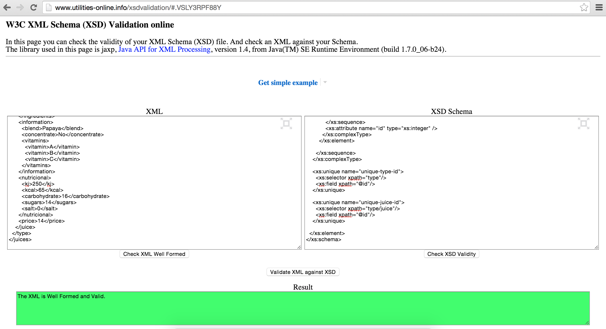
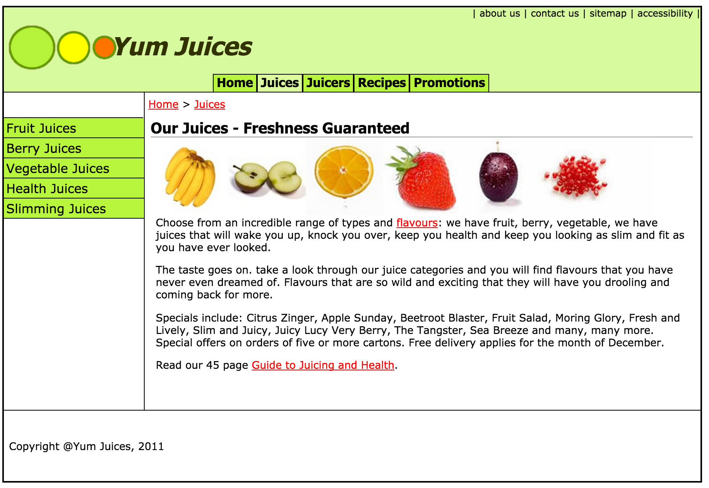
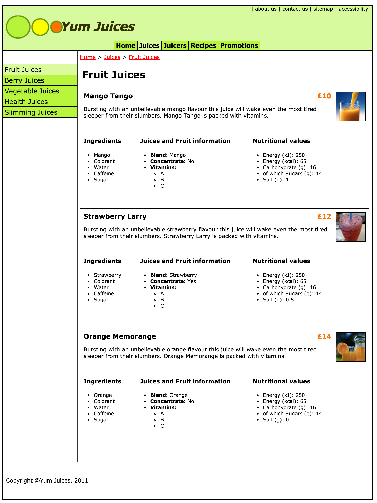
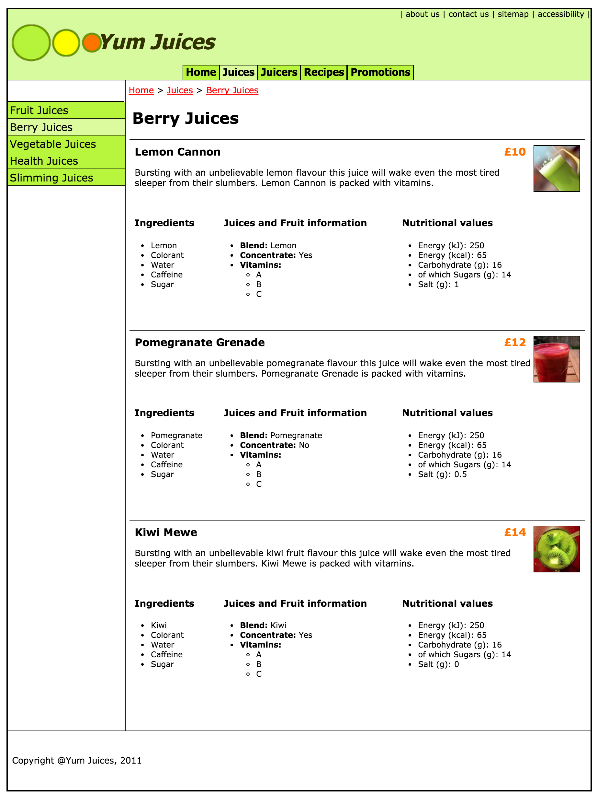
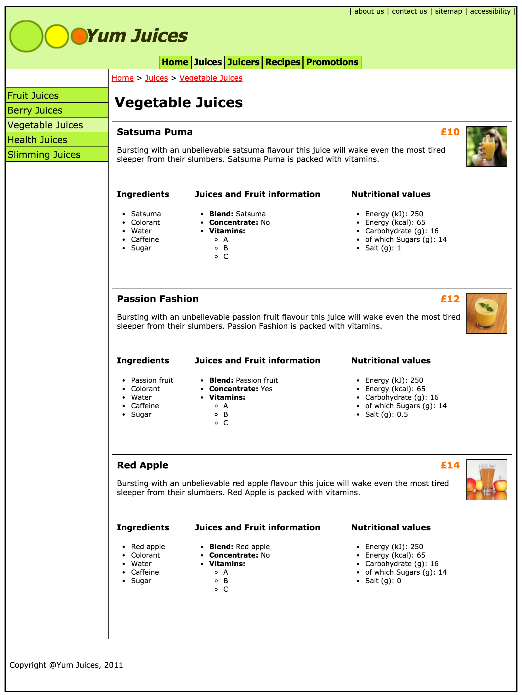
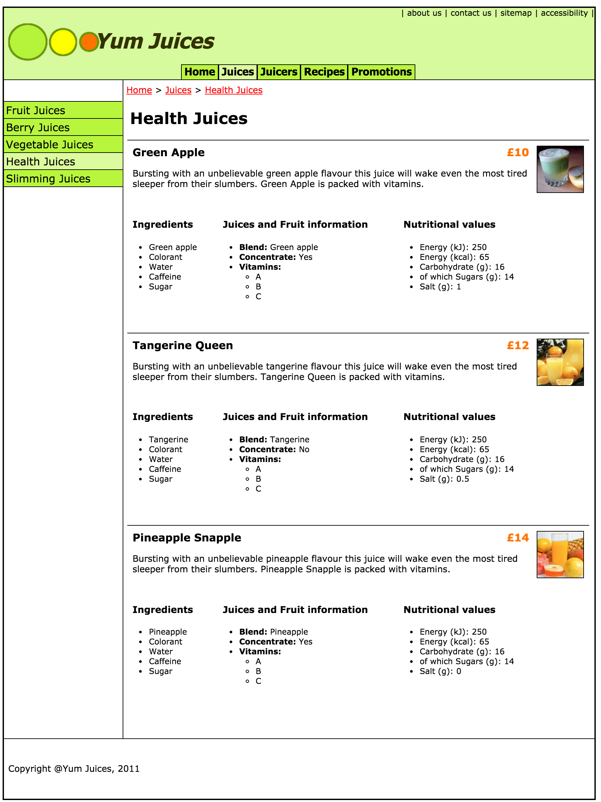
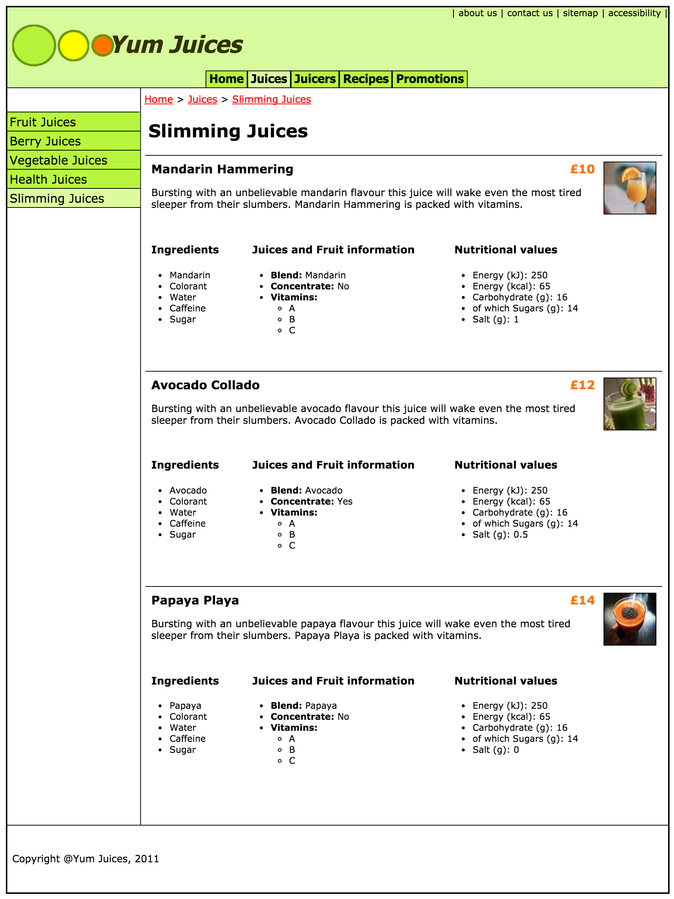

This is the documentation for the 2014/2015 Birkbeck University of London FMA (Final Marked Assignment).
The webpage for this assignment can be found at:
http://titan.dcs.bbk.ac.uk/~jgomes01/xmfma
The complete github repository for this module can be found at:
https://github.com/jbonigomes/xml
The picture below illustrates that the files provided for this assignment are well formed and have passed both DTD and Schema validations.

The task for this assignment involved creating a juices catalogue that captures juices information in an XML format. The XML file must contain at least 10 different contacts and should capture at the very least the following information:
First and foremost, in addition to the items mentioned above, the final XML document also features the following elements:
The structure of the XML was implemented with the fact that users can add as many ingredients to a product as they wish, therefore, the structure for ingredients has been declared as a complex type with an unbounded amount of ingredient elements. Likewise, the vitamins element follows the same structure.
The datatype used to validate most elements was token, this was decided for two reasons, most entries were textual and it removes leading and trailing spaces. The price field received a decimal datatype with a restriction of 2 fraction digits. All the other numeric entries were declared as integers. The following Stack Overflow post was used as a base for this declaration:
http://stackoverflow.com/questions/6454256
The only other restriction added was to the concentrate element, since the value may only either be 'Yes' or 'No', the following W3C schools article was used as a base for this declaration:
http://www.w3schools.com/schema/schema_facets.asp
The final business rule to be met, was to ensure that the ids for both 'juice' and 'type' were kept unique, the following Stack Overflow post has served as a based for those declarations:
This assignment required an implementation of an XSLT transformation of the XML into HTML, so that it could be presented as a web page.
This was achieved based on the initial files given for the assignment, two pages were removed and merged into one, the fruitjuces.html and the juices.html. The latter is simply an information page and the former has been replaced with the dynamic XML content.
To achieve it, an XSLT file was created, the XML links to this file and when accessed via a web brower, the transformation occurs.
In addition to the 10 mandatory juices required, the implementation created another 5 juices, so that each juice type can now have 3 products for better demonstration of the capabilities of the final outcome.
Since there is only one XML file, some JavaScript had to be implemented in order to create the illusion that the juices page consists of many sub pages grouped by their types.
What the JavaScript file does is rather simple, the DOM contains many right columns, that are hidden by default, except the first one, when the page loads. Since the first right column is simply a static introduction which is not related to any juice type, the left navigation is left without any 'current page' indication. What it then does is simply listen to click events in each of the links in the left navigation, when they are clicked, it ensures the right clicked element highlights as the current page and displays the relevant right column content.
The screenshots below illustrate how the final implemention outputs the XML content:
The landing page view: 
The Fruit Juices view: 
The Berry Juices view: 
The Vegetable Juices view: 
The Health Juices view: 
The Slimming Juices view: 
Although this assignment is rather simplistic, the final outcome of the XML document does not make any use of namespaces, the reason behind this decision comes from the fact that I could not get the XML Schema to validate an XML namespaced tag. To overcome this problem, the element which contains the name of a type has been renamed from 'name' to 'title', this way, the element name for a juice could be kept as 'name'.
For the JavaScript to display the correct pages, an unique id attribute had to be added to the XML Schema, this id is referenced in two places, in the XSLT file, once as a data attribute for the left navigation links and once as part of the id of each dynamic right column content, so that the correct ones can be displayed.
The following Stack Overflow post has helped me with concatenating values in an XSL attribute: